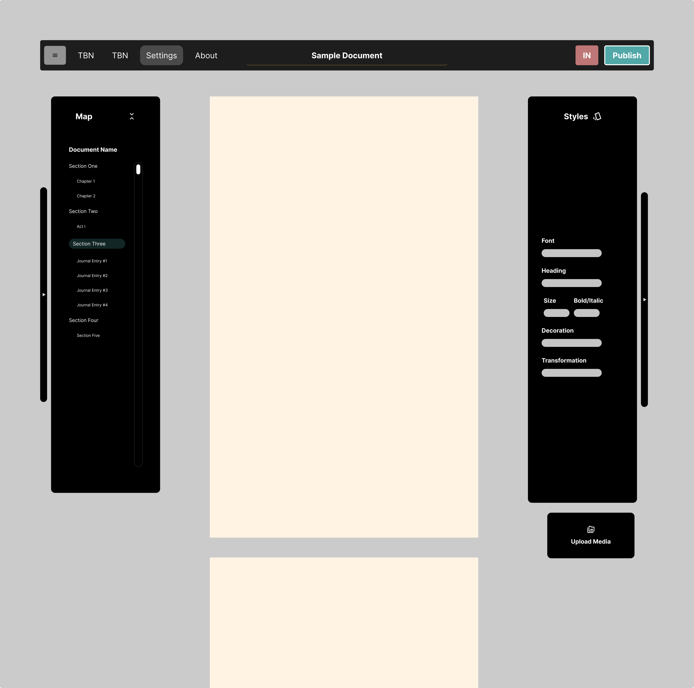

Quillty
A modern, human-centered writing application

Please note that this project is currently a work-in-progress, and any material shown is subject to change at any given time. Thank you!
A modern, human-centered writing application
Please note that this project is currently a work-in-progress, and any material shown is subject to change at any given time. Thank you!
Quillty was born out of a frustrating but inspired night of bouncing between different writing applications that couldn’t synchronize, couldn’t unify their purpose, and couldn’t support the way writers actually think. Modern writing tools have become bloated, monetized, and detached from the human-centered foundation of writing itself. Writing is a civilizational skill—so why should we have to pay subscription fees just to express ideas?
Quillty challenges that by combining the broadest purpose of writing with a unified, distraction-free environment. It helps people write professionally or creatively without feeling like the software is doing the work for them—jumpstarting flow while keeping the writer in control.
The vision is simple: bring writing into the digital age by removing bloat, rebuilding the experience from the ground up, and creating a modern, minimal, visually appealing environment that still feels powerful.
My role in Quillty wasn’t just to design a UI—it was to think like a writer. Too many tools are built from a top-down perspective, shaped by corporate priorities rather than the needs of real people. Writing is bottom-up by nature: anyone can place words on a page, but not every environment supports the writer’s focus, clarity, or flow.
Every decision I made for Quillty centered on this question: “Can the environment help the writer do what they do best?” This meant building with a writer’s mindset, shaping space, silence, and focus instead of adding friction or noise.
The first version of Quillty is intentionally mid-fidelity. It explores how a modern alternative to traditional word processors could look and feel—without diving into full prototyping yet. Many people rightfully complain that Word, Google Docs, and similar tools still lack intuitive features that should exist by default.
This version isn’t meant to be final. It’s a foundation for future prototypes as my technical experience grows. It shows that you can still build something visually compelling while designing logic and workflows that solve long-standing problems in writing tools that haven’t evolved with the times.
My design philosophy didn’t begin with Quillty—Quillty simply became the canvas where it finally clicked. I’ve learned that many visual designers start by polishing surfaces without fully understanding what truly matters first, or why. My mind works differently. When I design, the entire system starts running through my head at a rapid pace, zeroing in on the most frustrating or structurally important problems. Those become my starting point.
The principle is simple: fix the hardest problems first. If you solve those early, the rest of the project falls into place—from user flows, to sitemaps, to the prototypes themselves. I also tend to “know” what the product wants to become even before the sketching stage. Instead of trying to figure out what’s needed from scratch, I build progressively toward a vision that already exists mentally.
I take real-world tools, strip them down to their most basic function, and rebuild them in a way that is more cohesive, more organized, and more structurally sound for the user. Quillty isn’t just a product—it’s an embodiment of that philosophy.
Quillty’s interface is influenced by four major tools: Microsoft Word, Google Drive, Adobe Reader, and Framer. The last two may seem like unexpected choices, but they revealed insights traditional writing tools have ignored for years.
Microsoft Word is powerful, but overwhelmingly cluttered. It presents so many controls up front that many users need tutorials or a long adjustment period before they can even begin writing. Quillty takes the opposite approach: the interface is intentionally calm, allowing writers to start immediately instead of navigating complexity.
The structure itself is guided by clarity. The header removes inherited noise and focuses solely on document-level actions and management. No styling tools live there—keeping the mental model clean and predictable.
The left-hand panel takes light inspiration from Adobe Reader—not its styling, but its practicality for navigating documents in a grounded, familiar way. I wanted something visually appealing that helped users orient themselves inside longer texts without overwhelming them. Its deeper value is explored later in the case study.
Framer became the surprising influence for the right-hand styling panel. It helped strip away the bloat of traditional word processors and reframe styling as a dedicated, well-organized space. Despite being a design tool, Framer’s clean hierarchy and restraint highlight how much visual noise writing software still carries. Quillty adopts that clarity, offering powerful styling options without clutter.
Every panel in Quillty is collapsible. Writers need space, silence, and freedom—not menu bars shouting for attention. The interface can disappear entirely, leaving nothing but the document. Panels can be hidden manually or revealed only when the user intentionally moves toward them, supporting uninterrupted writing flow.
The navigation will eventually support user-defined “quick actions,” enabling people to tailor their workflow instead of being forced into a predetermined one.
Overall, the entirety of Quillty’s UI is built around reducing cognitive load. The central writing area is sacred. The left panel anchors document structure. The right panel handles styling. Nothing overlaps, nothing competes, and nothing demands attention when it shouldn’t. No one should have to spend 15 minutes learning how to use a writing tool—they should be writing from the moment the page loads.